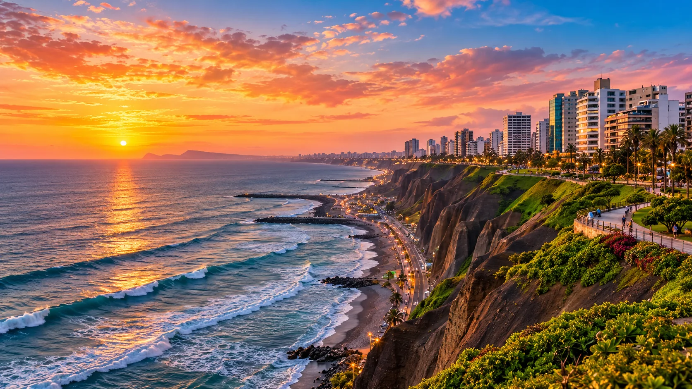
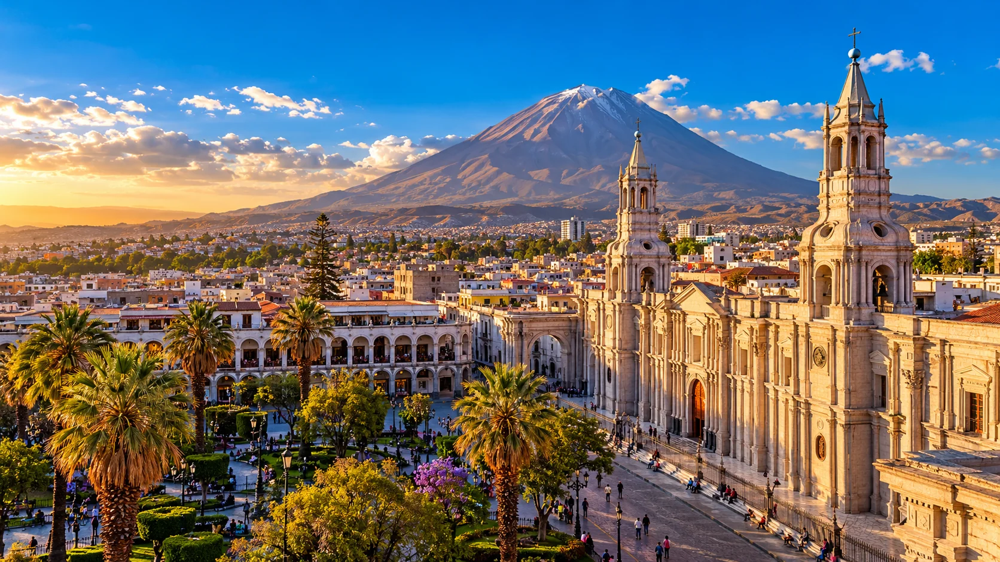
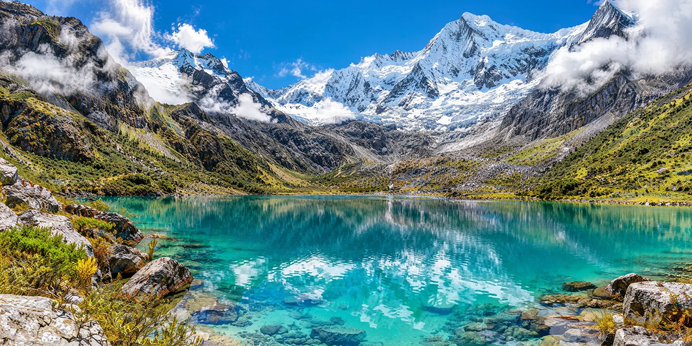
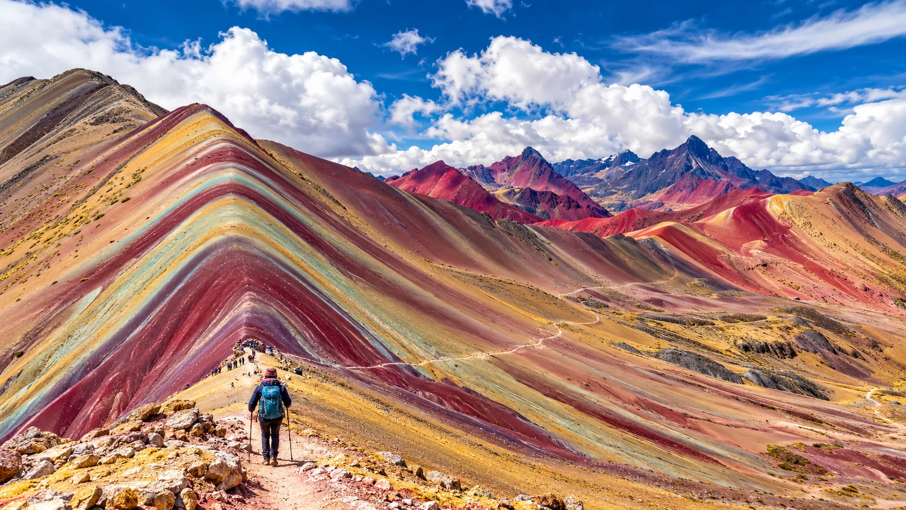

EL ATLAS TRIPNo pongas límites
No pongas límites
al mapa.
Una colección viva de ideas para empezar a explorar. Elige una región y conecta después con alojamientos, experiencias, vuelos y transporte.
Abrir atlas ↘ EUROPA↗
EUROPA↗Francia
París
Arte, cultura y gastronomía
 ASIA↗
ASIA↗Japón
Tokio y Kioto
Contrastes, templos y diseño
 ISLAS↗
ISLAS↗Océano Índico / Pacífico
Islas tropicales
Mar, descanso y aventura
 MONTAÑA↗
MONTAÑA↗Europa
Los Alpes
Paisajes y rutas panorámicas
 AMÉRICA↗
AMÉRICA↗Estados Unidos
Nueva York
Horizonte urbano, cultura y energía
 EUROPA↗
EUROPA↗Italia
Roma
Capas de historia y vida italiana
 ORIENTE MEDIO↗
ORIENTE MEDIO↗Emiratos Árabes Unidos
Dubái
Arquitectura audaz y desierto
 ÁFRICA↗
ÁFRICA↗Norte de África
Marruecos
Medinas azules y cultura viva
 ASIA↗
ASIA↗Sudeste Asiático
Tailandia
Calas turquesas y paisajes tropicales
 AMÉRICA↗
AMÉRICA↗Perú
Cusco & Machu Picchu
Historia y cumbres andinas

AMÉRICA↗Perú
Lima
Costa urbana y cocina peruana

AMÉRICA↗Perú
Arequipa
Arquitectura y volcanes
 NATURALEZA↗
NATURALEZA↗Sudamérica
Amazonía
Ríos, bosque y biodiversidad
 DESIERTO↗
DESIERTO↗Perú
Huacachina
Dunas, oasis y aventura

MONTAÑA↗Perú
Huaraz
Lagunas y cordilleras
 CULTURA↗
CULTURA↗Perú / Bolivia
Lago Titicaca
Cultura viva junto al lago

AVENTURA↗Perú
Montaña Arcoíris
Colores de los Andes
✦Los destinos son inspiración. Los requisitos de ingreso, seguridad, salud y transporte dependen de cada país y deben verificarse antes de viajar.